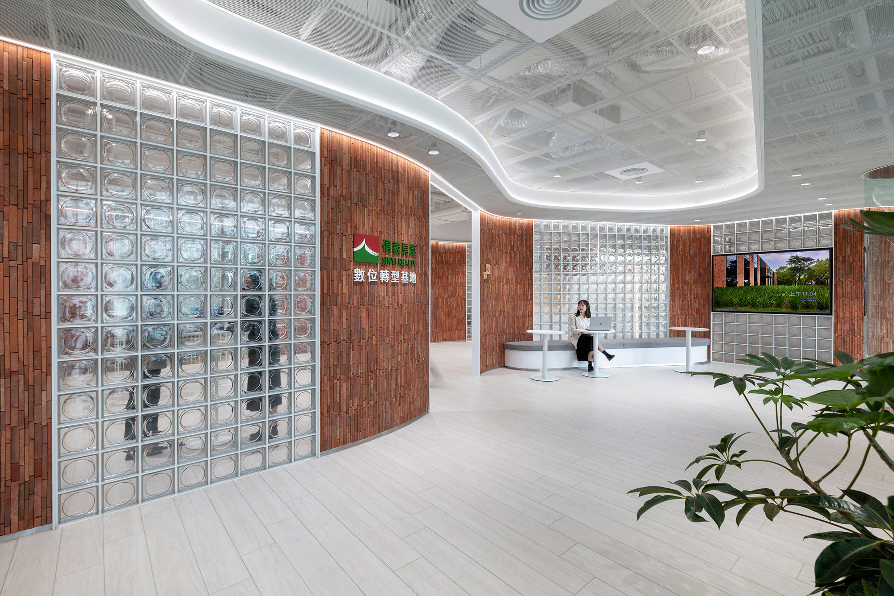
信義房屋 · 台北總公司
數位轉型基地
以人為本，
讓工作方式由人決定。
基地以「無為而治」為空間運行哲學。藉由開放辦公、非固定座位及不同尺度的共享與專注場域，讓同仁依任務選擇位置，也讓跨部門的臨時討論更容易發生。
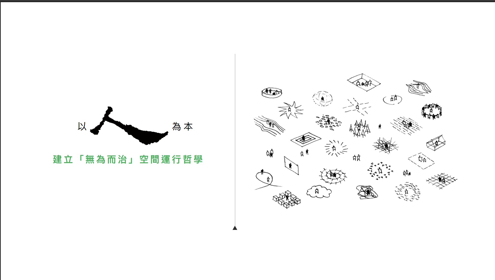
五大運行方針
- 讓人自主選擇
以「無為而治」規劃工作環境，讓同仁依任務切換場域。
- 培養空間五力
以不同情境支持感受力、創造力、思考力、行動力與協作力。
- 打開部門邊界
以共用場域創造跨部門交流機會，凝聚「信義一體」的工作氛圍。
- 鼓勵自主創新
營造願意主動參與、承擔責任和分享成果的工作文化，累積團隊的歸屬感。
- 吸引轉型人才
透過可感受的工作環境，讓有志參與數位轉型的人看見團隊如何工作。
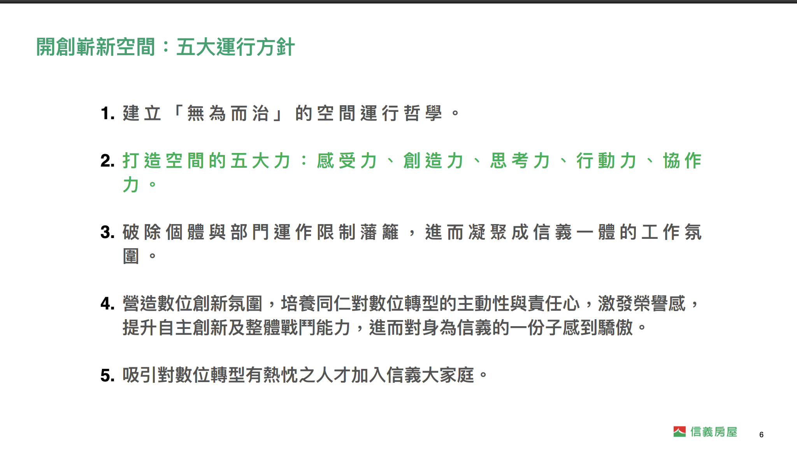
選材與空間記憶
讓台灣街屋的紅磚，
走進基地。
選材從「什麼材料能代表這個地方」出發。紅磚讓人聯想到台灣常見的街屋與老住宅，也呼應信義房屋深耕在地的形象。完工空間以紅磚界定動線，搭配透光玻璃磚，使分區之間保有光線與視線。
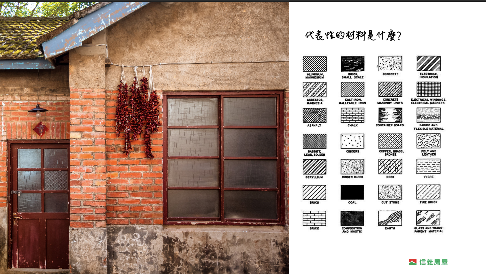
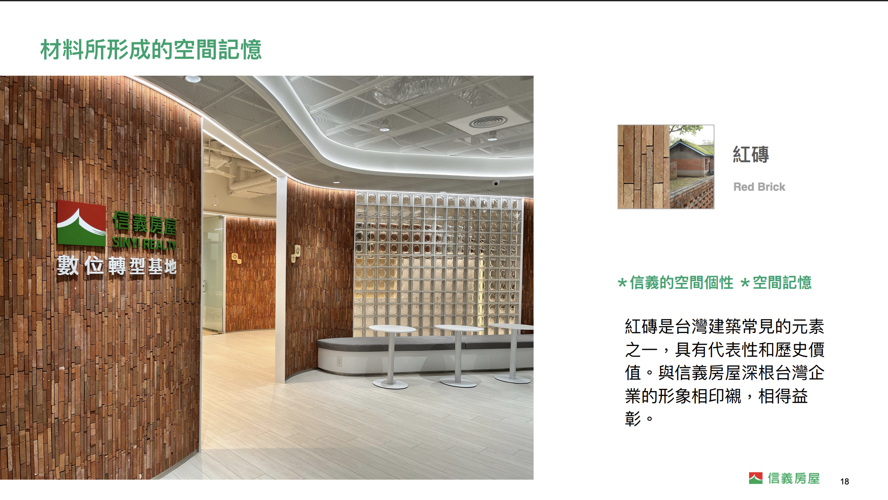
從平面長出的識別。
從平面上的協作空間擷取輪廓，化成木質標牌的形狀，再搭配圖示與編號辨認各處 HOME 協作據點。從同一形體延伸出不同變化，也呼應創意在團隊中持續生成。
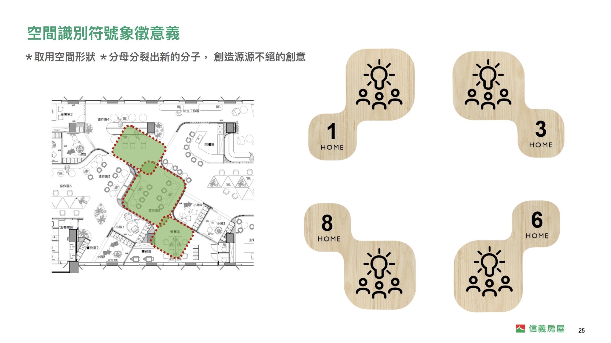
完工空間
信義房屋在台北總公司打造數位轉型基地，透過開放式及非固定座位的混合辦公，讓人依工作需要選擇座位，也為臨時討論和團隊協作留出空間。
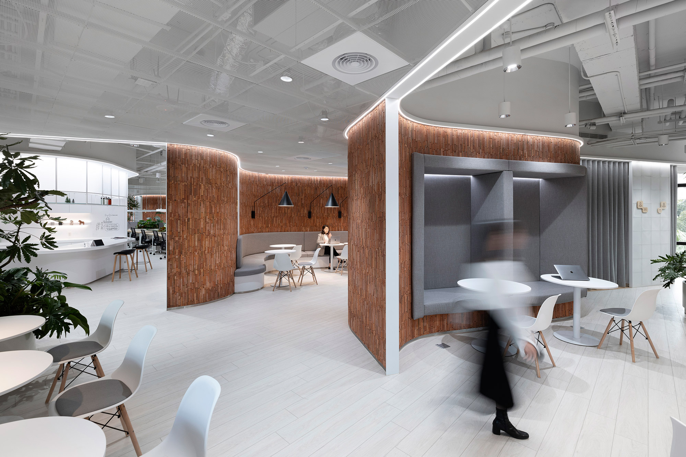
簡報以「無為而治」為空間運行理念，讓同仁自主選擇專注、思考、交流或行動的場域。不同量體與直、曲片牆組織動線與分區。
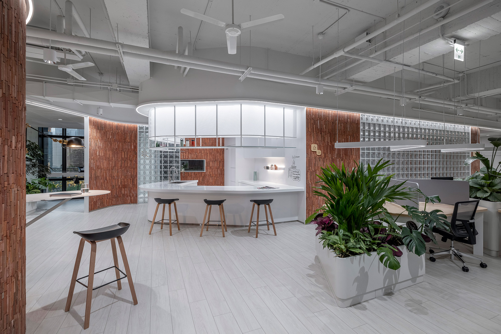
迎賓、互動、協作、會議、個人與多功能空間承接不同任務。共享吧檯與鄰近座席讓短暫停留、交談及臨時工作自然發生。
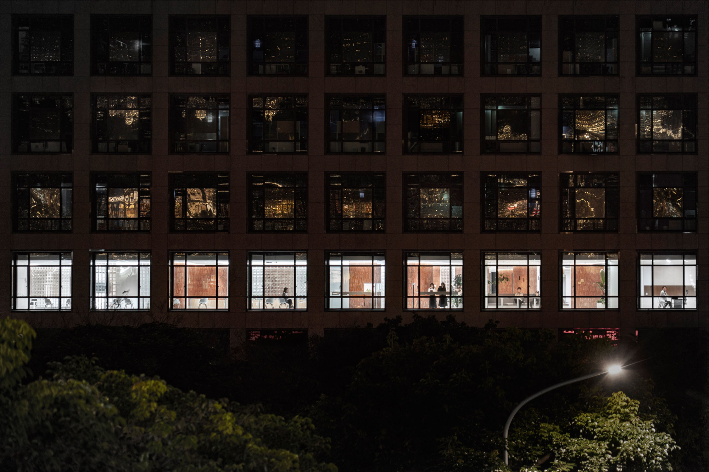
紅磚取自台灣常見的建築語彙。玻璃磚在區隔場域時保留透光性，擴張網增加天花層次。從夜間立面也能看見紅磚與透光牆的節奏。
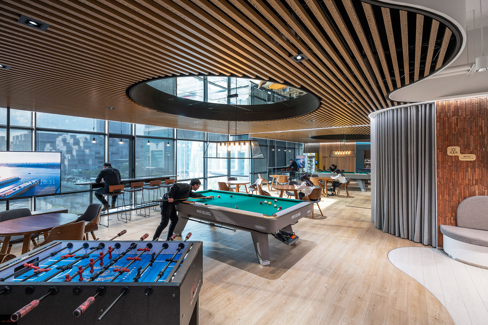
把工作和休憩放在相鄰的場域。窗邊座位、撞球桌與桌上足球，讓同仁可在工作之間稍作休息，也有機會和不同團隊交流。
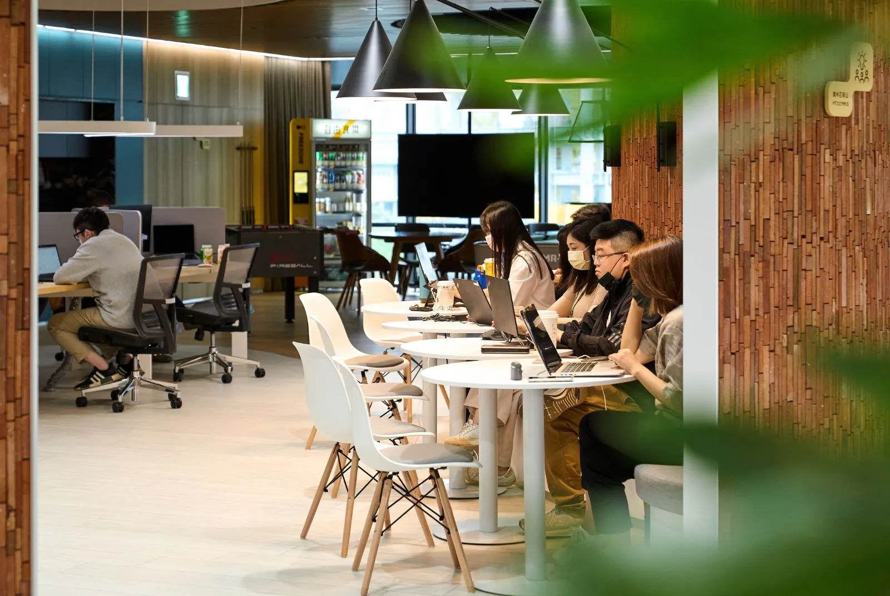
完工後的使用照片呈現固定設備、辦公座位與共享桌同時運作。基地的價值，在於同仁可以依當下任務切換工作方式。